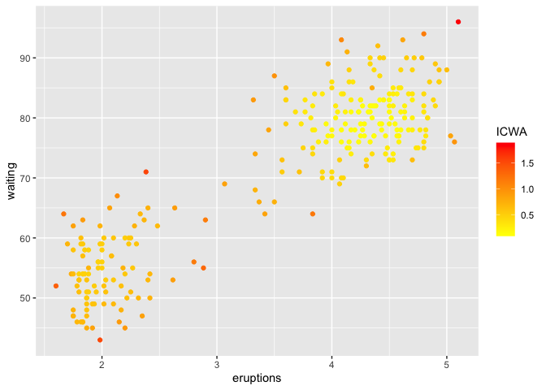

outlierensembles provides a collection of outlier/anomaly detection ensembles. Given the anomaly scores of different anomaly detection methods, the following ensemble techniques can be used to construct an ensemble score:
- Item Response Theory based ensemble discussed in Kandanaarachchi (2021)
- Greedy ensemble discussed in Schubert et al. (2012)
- Inverse Cluster Weighted Averaging (ICWA) method discussed in Chiang et al. (2017)
- Using Maximum scores discussed in Aggarwal and Sathe (2015)
- Using a threshold sum discussed in Aggarwal and Sathe (2015)
- Using the mean as the ensemble score
Installation
You can install the released version of outlierensembles from CRAN with:
install.packages("outlierensembles")And the development version from GitHub with:
# install.packages("devtools")
devtools::install_github("sevvandi/outlierensembles")Example
We use 7 anomaly detection methods from DDoutlier R package as our base methods. You can use any anomaly detection method you want to build the ensemble. First, we construct the IRT ensemble. The colors show the ensemble scores.
faithfulu <- scale(faithful)
y1 <- DDoutlier::KNN_AGG(faithfulu)
y2 <- DDoutlier::LOF(faithfulu)
y3 <- DDoutlier::COF(faithfulu)
y4 <- DDoutlier::INFLO(faithfulu)
y5 <- DDoutlier::KDEOS(faithfulu)
y6 <- DDoutlier::LDF(faithfulu)
y7 <- DDoutlier::LDOF(faithfulu)
Y <- cbind.data.frame(y1, y2, y3, y4, y5, y6, y7)
ens1 <- irt_ensemble(Y)
#> Warning in sqrt(diag(solve(Hess))): NaNs produced
df <- cbind.data.frame(faithful, ens1$scores[ ,2])
colnames(df)[3] <- "IRT"
ggplot(df, aes(eruptions, waiting)) + geom_point(aes(color=IRT)) + scale_color_gradient(low="yellow", high="red") 
Then we do the greedy ensemble.
ens2 <- greedy_ensemble(Y)
df <- cbind.data.frame(faithful, ens2$scores)
colnames(df)[3] <- "Greedy"
ggplot(df, aes(eruptions, waiting)) + geom_point(aes(color=Greedy)) + scale_color_gradient(low="yellow", high="red") We do the ICWA ensemble next.
ens3 <- icwa_ensemble(Y)
df <- cbind.data.frame(faithful, ens3)
colnames(df)[3] <- "ICWA"
ggplot(df, aes(eruptions, waiting)) + geom_point(aes(color=ICWA)) + scale_color_gradient(low="yellow", high="red") 
Next, we use the maximum scores to build the ensemble.
ens4 <- max_ensemble(Y)
df <- cbind.data.frame(faithful, ens4)
colnames(df)[3] <- "Max"
ggplot(df, aes(eruptions, waiting)) + geom_point(aes(color=Max)) + scale_color_gradient(low="yellow", high="red") 
Then, we use the a threshold sum to construct the ensemble.
ens5 <- threshold_ensemble(Y)
df <- cbind.data.frame(faithful, ens5)
colnames(df)[3] <- "Threshold"
ggplot(df, aes(eruptions, waiting)) + geom_point(aes(color=Threshold)) + scale_color_gradient(low="yellow", high="red") 
Finally, we use the mean values as the ensemble score.
ens6 <- average_ensemble(Y)
df <- cbind.data.frame(faithful, ens6)
colnames(df)[3] <- "Average"
ggplot(df, aes(eruptions, waiting)) + geom_point(aes(color=Average)) + scale_color_gradient(low="yellow", high="red")  # References
# References
Aggarwal, Charu C., and Saket Sathe. 2015. “Theoretical Foundations and Algorithms for Outlier Ensembles.” ACM SIGKDD Explorations Newsletter 17 (1): 24–47. https://doi.org/10.1145/2830544.2830549.
Chiang, Alvin, Esther David, Yuh Jye Lee, Guy Leshem, and Yi Ren Yeh.
- “A study on anomaly detection ensembles.” Journal of Applied Logic 21: 1–13. https://doi.org/10.1016/j.jal.2016.12.002.
Kandanaarachchi, Sevvandi. 2021. “Unsupervised Anomaly Detection Ensembles Using Item Response Theory.”
Schubert, Erich, Remigius Wojdanowski, Arthur Zimek, and Hans Peter Kriegel. 2012. “On evaluation of outlier rankings and outlier scores.” In Proceedings of the 12th Siam International Conference on Data Mining, Sdm 2012, 1047–58.